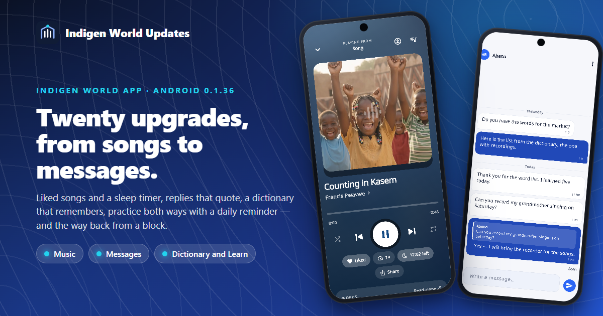
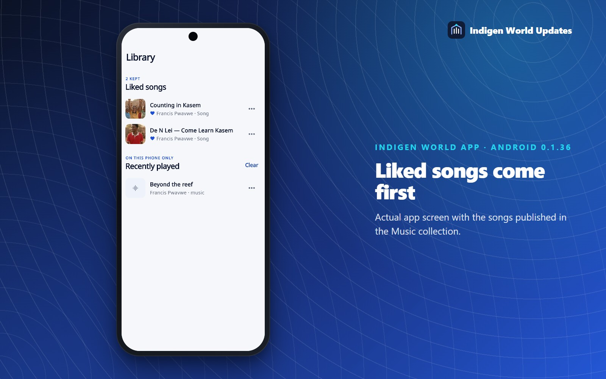
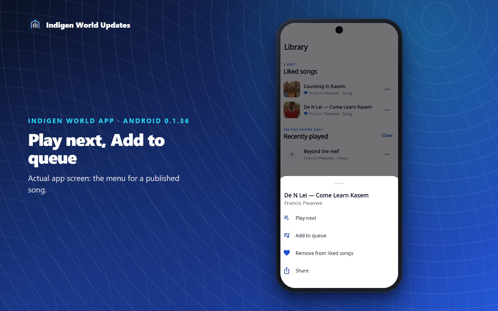
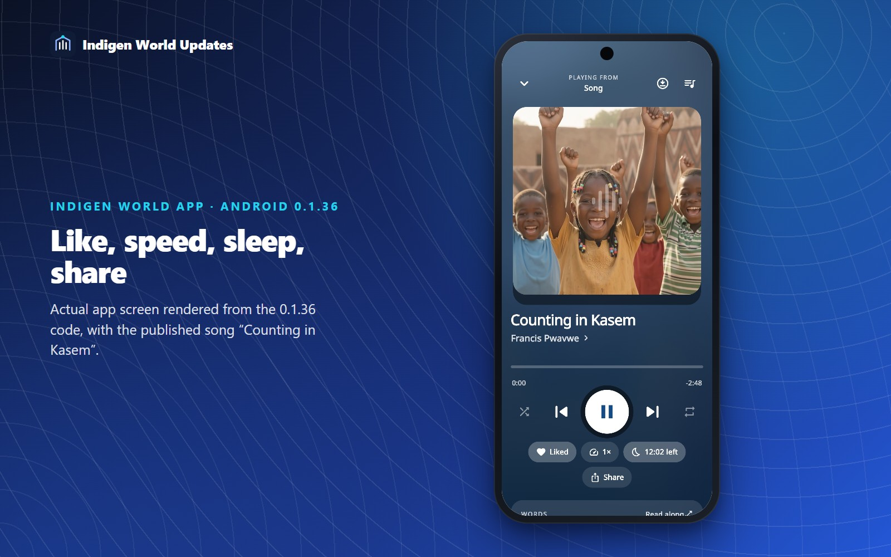
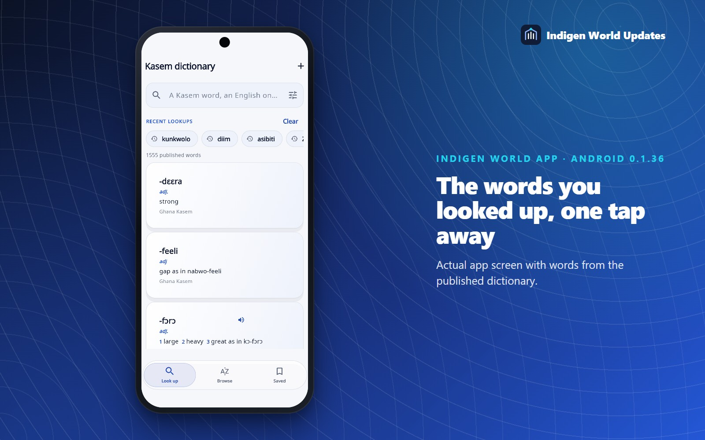
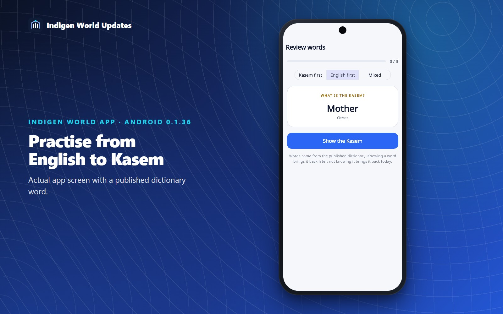
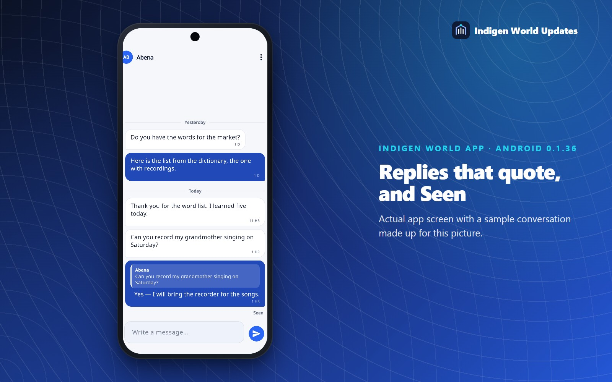
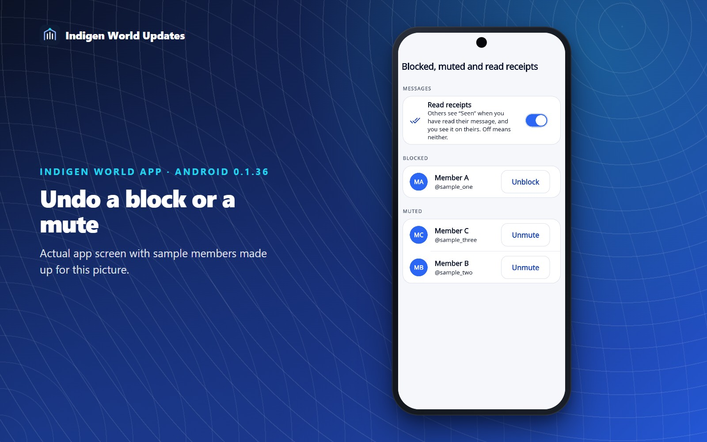
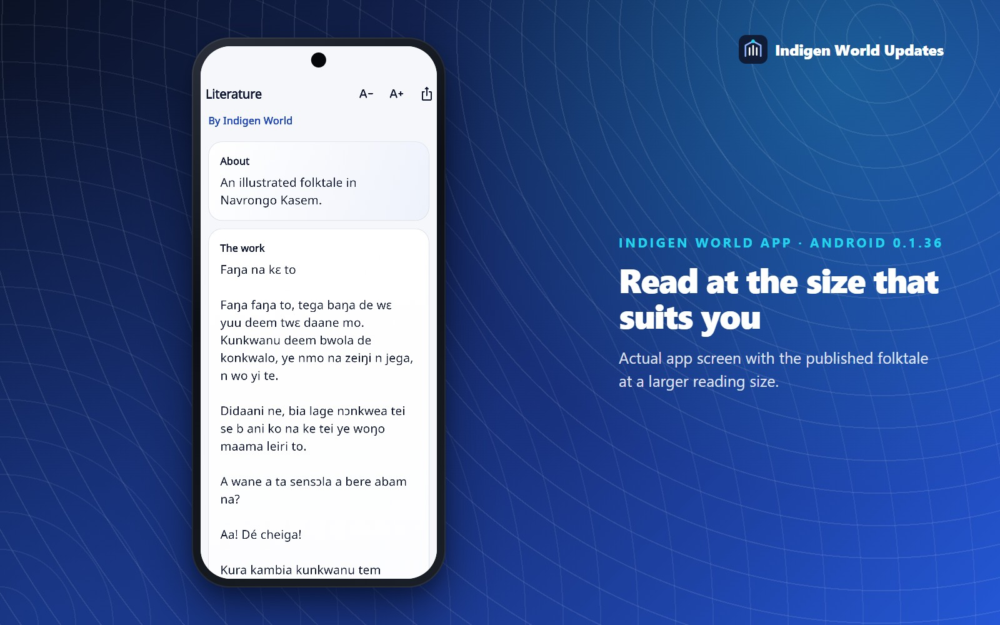

Twenty improvements across the Indigen World app: songs you can keep, a sleep timer, replies that quote what they answer, a dictionary that remembers what you looked up, practice in both directions with a daily reminder, and a few long-standing gaps closed — including the way back from a block.
Status — 25 October 2026. Built and tested as Android version 0.1.36 (build 45). It is not in the Play Store yet; until it is, the app you have works as before. Everything in this update runs on your phone and with the servers as they are today.
Tap Like on the player, or ⋯ → Like on any song, and it goes into Liked songs at the top of the Library tab. A small heart marks liked songs wherever they appear. Signed in, your liked songs follow your account to another phone, the same way saved dictionary words do.

Press and hold a song, or tap its ⋯, for Play next and Add to queue. Play next really is next, even with shuffle on. If nothing is playing, the song simply starts.

Tap Sleep on the player and choose 15, 30, 45 or 60 minutes, or the end of the song or reading you are on. The pill counts down, and the music fades out over the last ten seconds instead of stopping with a jolt.

The 1× pill sets the speed from 0.75× to 2×. Songs and readings each remember their own speed, so listening to a reading at 1.5× does not speed up your music.
Audiobooks now remember where you stopped in each reading, not just the last thing you played. Go back to any of them and it carries on from there, and a Continue listening shelf with progress bars appears at the top of Audiobooks. There are no published readings in the Audiobooks channel yet, so this one has no picture; it is ready for the first.
The words you opened last appear under the empty search box. One tap opens a word again, without hunting for ɛ, ɔ or ŋ on the keyboard. The list stays on your phone, and Clear empties it.

A share button on every published entry sends the word, its meaning and its example, with a link to the same word on the Kasem dictionary website, venacula.com, which opens for anyone with or without the app. An example sentence that came from Tatoeba keeps its credit when it is shared.
Review words can now show the English and ask you for the Kasem, which is the direction you need for speaking. Choose Kasem first, English first or Mixed above the card. Either way the word moves through the same review schedule. When the Kasem is the answer, its recording waits until you reveal it.

Turn on Remind me to practise in the daily goal panel on Learn, or in Notification settings, and pick a time. On days you have not practised yet, your phone reminds you, and when you have a streak going it says how long it is. Tap the reminder and today's review opens. It is off until you turn it on, and it is skipped on any day you have already practised.
Swipe a message to the right, or press and hold it and choose Reply. Your answer shows a short quote of the message it answers. Tap the quote to jump back to it.

Seen appears under your last message once the other person has read it. If you would rather not share that, turn off Read receipts in Settings; then nobody sees when you have read their messages, and you do not see theirs.
Conversations are divided into Today, Yesterday and dated days. Long conversations used to show only the newest hundred messages; Load earlier messages now takes you back as far as the conversation goes.
The ⋮ menu in a conversation has Mute alerts. Messages still arrive; your phone just stays quiet about them. A muted conversation shows a small bell with a line through it.
While you type a message, the bar with ɛ, ɔ, ŋ and the tone marks appears above the keyboard, the same one the dictionary and the post composer have.
Once you have more than a handful of conversations, a search box at the top of Messages finds one by name, username or the last thing said.
Blocking or muting someone used to be one-way: once their posts disappeared, so did every way back. Settings → Blocked, muted and read receipts now lists everyone you have blocked or muted, with Unblock and Unmute buttons.

Works in the Collection have text size buttons (A− and A+), and the size you choose is kept for every work. Long works also remember how far down you had read and offer to take you back there, or start from the top.

Songs, readings and works in the Collection now have a share button. It sends the title, who made it, and a link to the Indigen World app.
Settings shows how much room the pictures the app has kept for speed take on your phone — covers, profile photos, artwork — with a button to clear them. They are fetched again when you next see them. Your downloads and drafts are never touched.
With your phone's text size turned up, the category names in the shop were cut off. The row now grows with your text size.